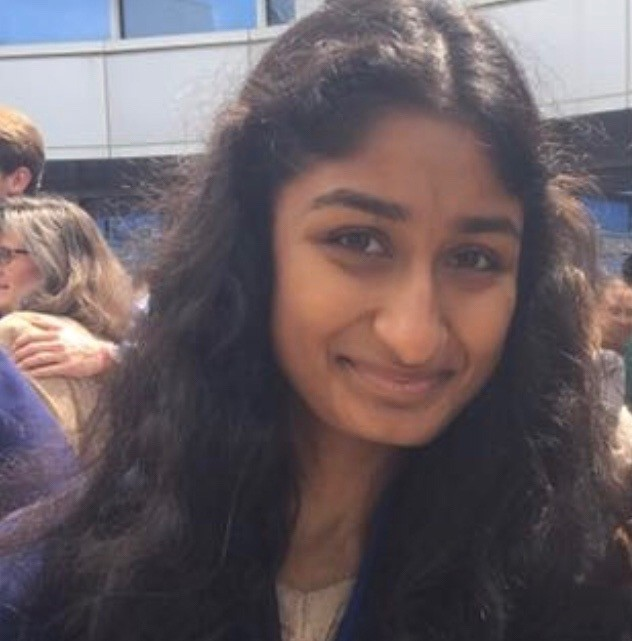
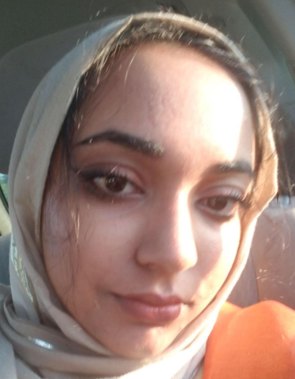
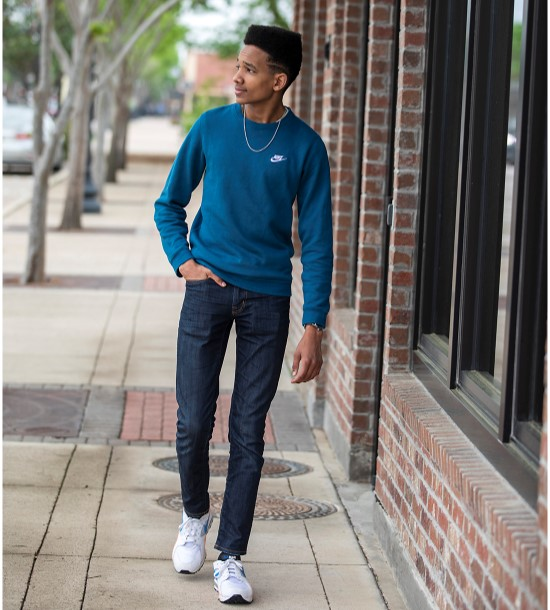

Class of 2023
 Rachel Waite
Rachel Waite
Rachel Waite is a Freshman at Rice University and is really excited to join the Rice University Mock Trial team! She first got involved in Mock Trial during her senior year of high school and competed in the San Diego County Mock Trial Competition in 2019. She enjoys running, skiing, going to the beach, and rewatching the same movies over and over. This semester she’s also learning country western dancing to embrace the yee-haw culture in Texas. She can’t wait for a great year of Mock Trial!
Major: Humanities
Star Sign: Sagittarius
We Love Mock
 Prani Nalluri
Prani is one of those crazy people who will run 10 miles for fun. She is interested in everything under the horizon, and therefore will spend the rest of her days forever undecided in her major. Like a truly cultured adult, she lives off a diet of Top Ramen, Kraft Mac and Cheese, and Oreos. She hopes to someday change the world - she'll let you know when she figures out how.
Major: "SO undecided"
Star Sign: Scorpio
We Love Mock
 Alizay "The Superior Sign" Azeem
Alizay Azeem is a Wiess freshman majoring in Social Policy Analysis and Economics, currently on the pre-law track. As a chaotic good Hufflepuff, her interests vary from wholesome twitter memes/making TikToks to social activism/protesting the patriarchy . She’s very excited to be a part of Rice’s mock trial team this year uwu!
Major: Psychology and Political Science
Star Sign: Sagittarius
We Love Mock
We Love Mock
 John Daniel
Your friendly neighborhood homie. Some of the best things in life are sports, the outdoors, playing mad vibes on the piano, and spending Saturdays with the boys. Nighttime drives are most definitely the wave. I can help you relive the good old days by throwing out the occasional whip and proving that 9 + 10 = 21.
Major: Economics and Sports Management - Minor: Business
Star Sign: Virgo
We Love Mock